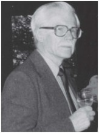

Please note: the AAS Obituaries are temporarily being hosted on this website while their full content is being ingested into the PubPub publishing platform newly adopted by the Bulletin of the American Astronomical Society. When the migration is complete, your existing links will take you to the final, migrated content. Contact peter.williams@aas.org with any questions.
Kinsey A. Anderson (1926-2012)
Kinsey A. Anderson, a professor emeritus of physics at the University of California, Berkeley, and a pioneer in the field now called space physics, died June 11, 2012, in Pinole, Calif. He was 85 and suffered from Alzheimer’s disease.
Born in Preston, Minn., on Sept. 18, 1926, Anderson graduated from Carleton College in Minnesota in 1949 with a B.A. in physics. While a graduate student at the University of Minnesota in the early 1950s, he was a member of the group that first developed balloons that could take experiments to high altitudes in order to study cosmic rays and X-rays that are blocked by the atmosphere. He was awarded a patent for a novel method of measuring stresses in balloon material for different shapes of balloons. For his Ph.D. thesis under University of Minnesota professor John Winckler, he used the balloon technology to measure cosmic rays at various latitudes and altitudes, even launching balloons from a U.S. aircraft carrier in the South Pacific. Later, he established, by direct observations at high altitudes, that intense fluxes of very energetic protons are emitted by the sun during solar flares. Piqued by unexpected X-rays that he and Winckler had discovered emanating from the atmosphere above Northern Canada, he also focused on X-ray observations.
After completing his thesis in 1955, he accepted a post-doctoral position at the University of Iowa, where he subsequently joined the faculty in 1958. He came to the UC Berkeley physics department in 1960 and switched to the then-new technology of satellite instrumentation to study energetic particles and X-rays from the sun and the earth. During the next 10 years, he and his students successfully flew instruments on more than a dozen spacecraft, including IMP (Interplanetary Monitoring Platform) 1-6, Explorers 33 and 35, OGO (Orbiting Geophysical Observatory) 5; and on numerous balloons and rockets. He convinced NASA that the Apollo 15 and 16 missions, which landed on the moon in the early 1970s, should carry subsatellites that could be left in lunar orbit. The goal was to measure the shadowing of energetic electrons by the moon to determine the motion of Earth’s magnetic tail, but it was found that the electron observations could also be used to measure the magnetic fields on the surface of the moon. This led to subsequent electron reflection magnetometry instruments for the Lunar Prospector and Mars Global Surveyor to map the surface magnetic fields of the moon and Mars.
Anderson served for 10 years (1970-79) as director of UC Berkeley’s Space Sciences Laboratory (SSL). As SSL director, he initiated a senior fellow program that allowed research scientists to become principal investigators, thus able to handle the administrative and technical burdens associated with the special needs of space flight programs.
Anderson was an author of approximately 200 papers and trained 24 graduate students on such diverse topics as instrument design; auroral, solar and cosmic x-ray emissions; energetic particles from the sun, Earth’s bow shock, magnetosphere and tail; the plasma physics of Halley’s Comet; and remnant magnetic fields of the moon and Mars. His research achievements resulted in his election as a member of the National Academy of Sciences. He also received a Guggenheim Fellowship, the Space Science Award from the American Institute of Astronautics and Aeronautics, a NASA Medal for Exceptional Scientific Achievement, the Alexander von Humboldt Award, fellowships in the American Geophysical Union, the American Physical Society and the American Association for the Advancement of Science, as well as an honorary doctorate from the University of Toulouse. Upon his retirement from UC Berkeley in 1990, he received the Berkeley Citation for distinguished achievement and notable service to the university.
Anderson is survived by his wife, Lilica Anderson (née Vassiliades) of El Cerrito; daughters Sindri Anderson of El Cerrito and Danae Anderson of Truckee, Calif.; and five grandchildren.
Obituary written by: unknown
BAAS Citation: BAAS, 2013, 45, 004